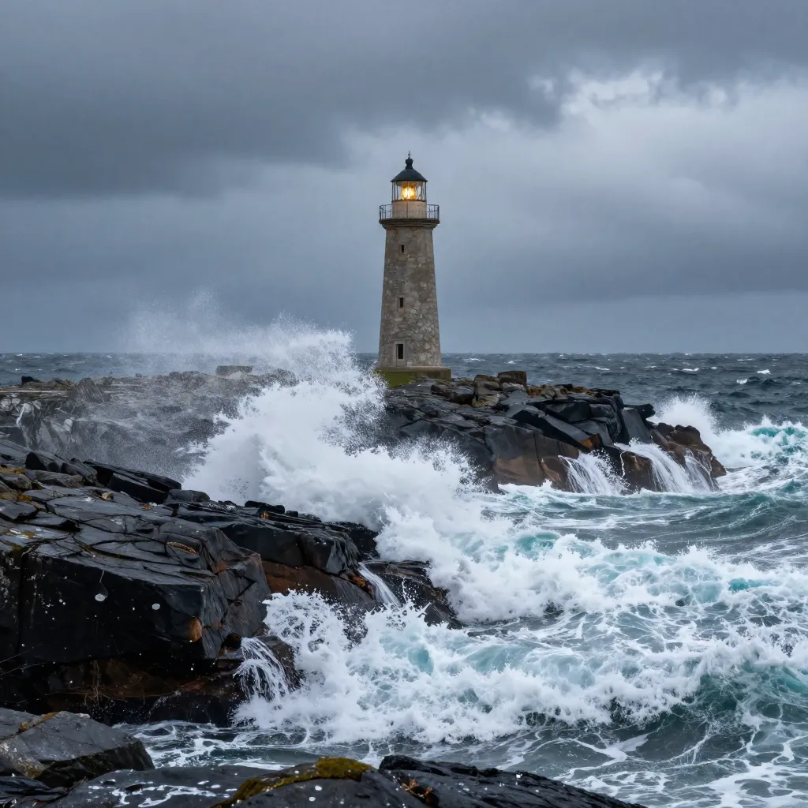

The Flannan Isle Lighthouse Mystery: Three Keepers Who Vanished Without a Trace

It was the bitter winter of 1900. About 20 miles west of the Isle of Lewis, in the Outer Hebrides of Scotland, a lonely rock stood in the wild Atlantic Ocean. A white lighthouse stood on it. Three men who lived there vanished.
The tower is called the Flannan Isles Lighthouse. It stands on Eilean Mor, the biggest of a few tiny islands where nobody lives. Sailors called them the Seven Hunters. The light had been lit for barely a year when its whole crew disappeared.
No bodies were ever found. No sign of a struggle was recorded. On December 26, 1900, the relief ship Hesperus arrived. It expected to find three keepers who were happy to see fresh food and mail. Instead it found a cold, dark tower with the gate and door closed, and nobody inside.
The three keepers were James Ducat, the principal keeper, and Thomas Marshall, the second assistant. The third was Donald McArthur. He was an occasional keeper, filling in for a colleague on sick leave. All three were simply gone.
The mystery has inspired poems, novels, and films. For more than a century, people have wondered what really happened on that lonely rock.
The Flannan Isles mystery is special. The keepers did not vanish from a ship or a village or a forest. They vanished from a lighthouse. A lighthouse is built to be the one steady, reliable point in a world of darkness and storm. It was their prison and their shelter. Then one day, it was empty.
The mystery lasts for a particular reason. The most likely explanation is quite simple, but nobody can prove it. The evidence tells a story of confusion and hurry. It shows men caught by surprise by forces they could not control, in a place so far away that nobody knew for eleven days.
The Flannan Isles are also known as the Seven Hunters. Where that name comes from is not clear. They are small, rocky islands in the Outer Hebrides. The largest, Eilean Mor, means “Big Island” in Gaelic. It covers about 17 hectares, and its highest point is about 88 meters above the sea. Steep cliffs on its western side drop straight into the Atlantic.
The islands are probably named after St. Flannan, an Irish preacher of the 7th century. The ruins of a tiny chapel for him still stand on Eilean Mor. Even this bare rock was once a place of spiritual shelter.
There are also old stone huts shaped like beehives on the island. Nobody can say for sure who used them, or when.
The lighthouse was designed by David Alan Stevenson. He came from the famous Stevenson family of engineers, which also produced the novelist Robert Louis Stevenson. It was built between 1895 and 1899 and cost £1,899, which was a lot of money then.
Every stone, every timber, and every piece of equipment had to be hauled up the steep cliffs from supply boats. That was hard even in good weather. The tower stood 23 meters tall, and its light sat 101 meters above the sea. It was first lit on December 7, 1899. A little more than a year later, it would be dark.
Life on the Flannan Isles was very lonely. Three keepers lived on the island at a time, and a fourth man rested on shore. They kept the light burning and wrote down the weather and sea conditions. A supply ship from the Northern Lighthouse Board (NLB) visited from time to time. It brought supplies, mail, and relief workers.
The islands lie in some of the most dangerous waters of the British Isles. Atlantic storms crash against the cliffs with great power. In winter, the waves could be very high, and the wind could be fierce. The job needed strength, discipline, and a love of quiet.
On December 15, 1900, a passing steamer called the Archtor noticed that the lighthouse was dark. The ship’s report only reached the Northern Lighthouse Board when it arrived at the port of Leith on December 18. Nobody went to check at once. That detail would trouble the investigation later.
The relief ship, the Hesperus, was under Captain Jim Harvie. Bad weather stopped it from sailing on December 20. It reached the Flannans around noon on December 26. That was eleven days after the light was last seen working. Winter storms often upset the schedule. But what Harvie found was not normal at all.
There was no sign of life. Accounts say that no flag flew and that nobody answered the ship’s horn. The relieving keeper, Joseph Moore, was sent ashore. He climbed the steep path from the landing stage to the lighthouse. He found the gate and the door closed.
Moore found the lamps clean and refilled, ready to light. The keepers had done their morning work but had not come back to light the evening lamps. Moore also noticed that the kitchen was very clean. He took this to mean that the keepers had left after dinner.
You may have read that a meal sat untouched on the table and a chair lay knocked over. Those details come from a famous poem written years later. They are not in the official reports.
Moore also looked for the keepers’ waterproof clothes. Oilskins are heavy waterproof coats. Marshall’s oilskins and boots were gone. Ducat’s boots and old waterproof coat were gone too. But McArthur’s coat was still in the lighthouse. Moore believed that he had gone out in his shirt sleeves.
Moore told Captain Harvie what he had seen. Then the men searched the whole island. They found no bodies and no signs of violence. The only clue to the keepers’ fate was the sign of a sudden departure.
The last entry in the log was made on December 13. Notes for December 14 and 15 were written on a slate, to be copied into the log later. Ducat wrote the last note on the morning of December 15. Later stories claimed that the log held frantic entries about storms of unnatural fury, a weeping keeper, and prayers for rescue. Researcher Mike Dash found that these entries were made up later. The official NLB report mentions nothing like them.
The three men who vanished were James Ducat, the principal keeper, Thomas Marshall, the second assistant, and Donald McArthur, the occasional keeper. He was standing in for William Ross, the regular first assistant, who was on sick leave. Being on the island that December was a matter of chance for him. Ducat left a wife and four children. McArthur left a wife and two children.
The official conclusion of the Northern Lighthouse Board was that a very large wave swept the three keepers into the sea. This is still the most widely accepted explanation. Other ideas, such as a fight among the men, have no proof.
The NLB superintendent, Robert Muirhead, went to the island to investigate. His report is dated January 8, 1901. He saw damage at the west landing. Railings were bent or twisted. A box of mooring ropes had been washed away. A block of stone weighing about a ton had been moved from its place. All of this fit the hit of an unusually big wave.
Muirhead decided that the men had probably gone down to the west landing to secure the box of ropes. Then an unusually large wave swept them away. He noted that McArthur had gone out in his shirt sleeves, which broke the NLB rules. Some writers think that he ran out to warn the others. Nobody can know.
This fits the evidence. The clean lamps suggest that the keepers had done their work for the day. Then something made them go out in a hurry. It might have been a sound, a sight from the window, or the fear that the equipment at the landing was in danger.
The missing oilskins suggest that two of the men dressed for the weather. They had gone out dressed to work at the landing. McArthur’s coat stayed behind. This suggests that he left in such a rush that he did not stop for it.
For decades, many people doubted that one huge wave could sweep men off a cliff. Rogue waves are waves more than twice as high as the others around them in the same storm. For a long time, many scientists thought that they were sailors’ tales. The usual wave models said that they were almost impossible.
That changed in 1995. The Draupner platform in the North Sea recorded a wave of 25.6 meters (84 feet) on January 1. The usual waves in that sea were about 12 meters high. It was the first rogue wave ever measured by an instrument. Later research suggests that such waves are more common than people once thought.
This does not prove that a rogue wave hit the keepers. But it shows that a giant wave, striking without warning in a bad storm, is possible. It would explain the damage at the landing. The damage was found very high above the sea, more than 30 meters up.
The Flannan Isles mystery might be a footnote in sea history today. But the poet Wilfrid Wilson Gibson wrote “Flannan Isle” in 1912. His poem made the disappearance famous around the world. It describes the empty lighthouse in eerie detail.
The poem added things that people now connect with the story. One is the untouched meal and the overturned chair. Another is three strange black birds sitting on the rocks like men. The poem makes the lighthouse a place of ghostly absence. It begins: “Though three men dwell on Flannan Isle / To keep the lamp alight, / As we steered under the lee, we caught / No glimmer through the night.”
The effect of the poem was huge. The Flannan Isles became more than a story of three men lost at sea. It became a ghostly tale of forces beyond understanding, striking in the loneliest place imaginable.
The poem’s influence goes on. The 2018 film The Vanishing, with Gerard Butler, takes many liberties with the facts. It is based on the Flannan Isles story.
The Flannan Isles Lighthouse was automated in 1971. That means machines run it, and it needs no keepers on the island. It is a silent guard on the rock where three men vanished more than 120 years ago.
At heart, this is a story about how little the sea cares. Three skilled men were posted to a lighthouse on a rock in the Atlantic. They kept their light burning and their records written. They did their duty in lonely, hard conditions. Then, on or about December 15, 1900, the Atlantic came for them.
The likeliest explanation is a very large wave striking without warning in a savage storm. It is the saddest explanation, too, because it has no villain, no plot, and no happy ending. The sea took them, as it has taken many others. It left only an empty tower.
The only witnesses were the ocean and the dead, so the mystery can never be fully solved. Three men walked out of a lighthouse and never came back. The lighthouse was lit again. But what happened on that day in December still has no certain answer.
References & Further Reading
📚 Recommended Reading: The Lighthouse Keepers by Keith McCloskey (on Amazon) — As an Amazon Associate, we earn from qualifying purchases.
Editorial note: The NLB report says a very large wave probably swept the keepers away, but nobody saw it happen, so this is still an idea and not a proven fact. Famous details such as the untouched meal and the frantic log entries are not in the real reports. See our Editorial Policy.